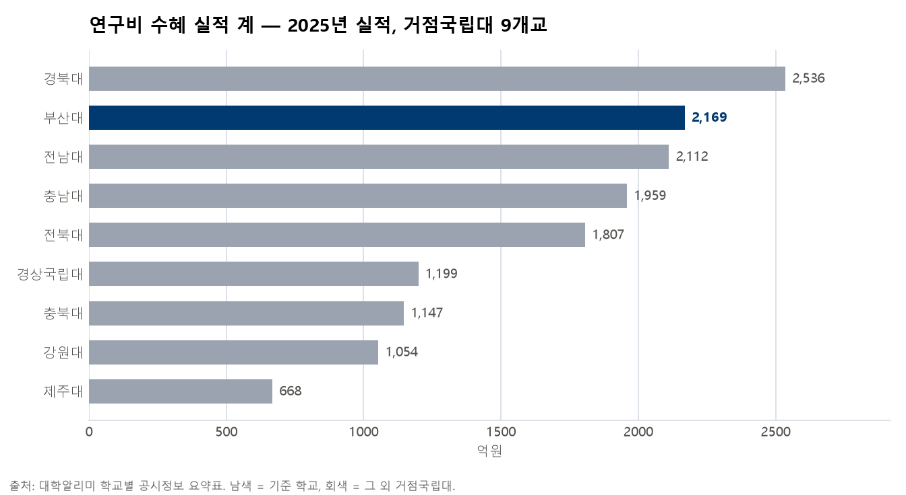
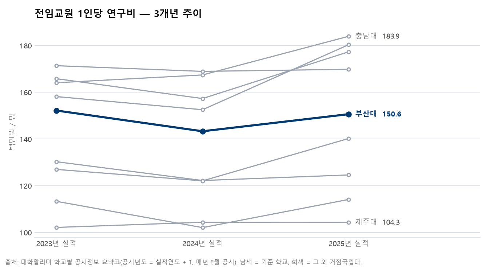
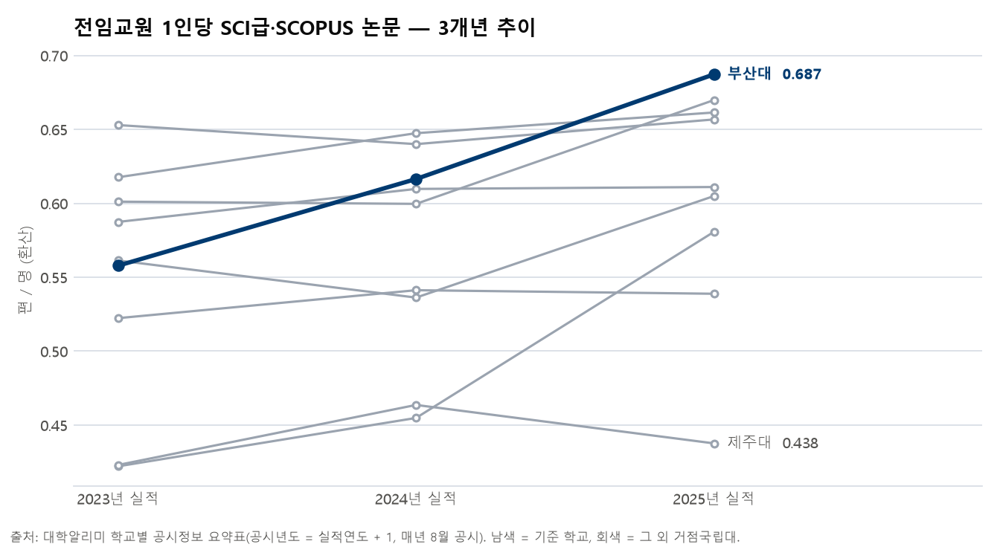

대학알리미(academyinfo.go.kr)의 학교별 공시정보 화면에서 "7-가 전임교원의 연구 실적"과 "12-가 연구비 수혜 실적" 요약표를 부산대학교와 거점국립대 8개교(강원·경북·경상국립·전남·전북·제주·충남·충북, 본교) 것으로 모아 CSV로 저장하는 도구를 만들어 줘. 그 다음 3개년 비교표(xlsx)와 차트(png)를 만들고, 한 장 보고자료 원고(txt)를 써 줘. 규칙: 공시값만 쓰고 내부 숫자는 넣지 마. 공시년도와 실적연도를 구분해서 표기하고(2026년 8월 공시 = 2025년 실적) 각주에 출처와 확인일을 써. 1인당 값은 계산식을 각주에 밝혀. 차트는 부산대만 색을 주고 나머지는 회색으로. 규칙은 .claude/skills/ 안에 카드(SKILL.md)로 저장해 줘.
연구진흥과는 연구 성과·통계를 총괄합니다. 사업 성과지표를 보고할 때 대학정보공시 원자료와 교차검증을 하고, "우리가 다른 거점국립대와 비교해 어디쯤인가"라는 질문도 받습니다. 그런데 대학알리미의 숫자는 학교 한 곳씩, 항목 한 개씩 화면에 나옵니다. 9개교 × 2항목 × 3개년을 비교하려면 열여덟 번 화면을 열고 옮겨 적어야 하고, 공시년도와 실적연도가 한 해 어긋나 있어 표를 만들 때마다 헷갈립니다.
대학알리미 공시값. 대학 단위 집계라 개인정보가 없고, 공공누리 자유이용입니다. 4회차에서 나눈 3단계 기준의 ①("그냥 읽혀도 되는 자료") 실물 예시입니다.
9개교를 나란히 놓은 표와 추이 그래프, 그리고 그걸 부서 보고서 서식에 옮긴 한 장.
| 항목 | 내용 | 이 페이지에서 쓴 값 |
|---|---|---|
| 7-가. 전임교원의 연구 실적 | 논문(국내·국제, 환산 편수), 저·역서, 전임교원 1인당 논문 | 1인당 논문(국제기준), 1인당 SCI급·SCOPUS — 공시값 그대로 |
| 12-가. 연구비 수혜 실적 | 교내·교외(중앙정부·지자체·민간·외국) 과제 수·연구비(천원), 대응자금 | 연구비 계(억원), 전임교원 1인당(백만원, 계 ÷ 전임교원 수 자체 계산), 교외 비중 |
analyze.py 실행 → 표 한 칸을 원자료와 대조## 바꾸지 않는 것 (표기 규칙) - 실적연도로 표기하고 각주에 공시년도를 쓴다: 2026년 8월 공시 = 2025년 실적. 둘을 섞어 쓰지 않는다. - 출처 문구: 대학알리미 {항목번호}. {항목명}, 학교별 공시정보 요약표(본교), YYYY-MM-DD 확인 - 1인당 연구비는 자체 계산(계 ÷ 전임교원 수)임을 각주로 남긴다. 1인당 논문은 공시값 그대로. - 차트는 기준 학교 하나만 남색, 나머지는 회색. 9개교에 9색을 주지 않는다. 두 축 그래프를 만들지 않는다. ## 하지 않는 것 - 내부 실집계·미공시 자료·개인 단위 자료를 넣지 않는다(대학 단위 공개 집계만). - 다른 대학을 "못한 예"로 지목하는 문장을 쓰지 않는다. 순위는 참고용으로만.
파일: .claude/skills/disclosure-report/SKILL.md · .claude/agents/disclosure-analyst.md · 도구/공시분석/fetch_summary.py(요약표 저장) · 도구/공시분석/analyze.py(표·차트·원고). 생성기와 스킬 카드는 Claude Code가 작성했고, 코드는 직접 쓰지 않았습니다.
입력한 문장: "연구비 수혜 실적과 연구 실적, 거점국립대 비교, 한 장으로" → python 도구/공시분석/analyze.py --hwpx 가 돌고 아래가 나옵니다(실행 약 10초).
| 학교 | 2023 계(억원) | 2024 계(억원) | 2025 계(억원) | 2025 1인당(백만원) | 2025 교외 비중 | 2025 과제 수 |
|---|---|---|---|---|---|---|
| 부산대학교 | 2,200.5 | 2,066.4 | 2,168.9 | 150.6 | 93.1% | 2,809 |
| 강원대학교 | 1,077.3 | 1,023.0 | 1,054.2 | 124.6 | 98.7% | 834 |
| 경북대학교 | 2,337.8 | 2,246.3 | 2,535.6 | 177.3 | 94.2% | 3,008 |
| 경상국립대학교 | 1,175.1 | 1,071.8 | 1,199.5 | 114.1 | 90.3% | 1,354 |
| 전남대학교 | 1,813.9 | 1,815.0 | 2,111.9 | 180.3 | 85.6% | 3,051 |
| 전북대학교 | 1,818.1 | 1,770.4 | 1,806.8 | 169.8 | 89.5% | 2,498 |
| 제주대학교 | 660.9 | 676.3 | 667.6 | 104.3 | 87.2% | 904 |
| 충남대학교 | 1,722.6 | 1,772.8 | 1,959.0 | 183.9 | 97.0% | 2,093 |
| 충북대학교 | 985.4 | 976.7 | 1,147.0 | 140.2 | 98.0% | 999 |
출처: 대학알리미 12-가. 연구비 수혜 실적, 학교별 공시정보 요약표(본교). 실적연도 2023~2025 = 공시년도 2024~2026(매년 8월 공시). 2026-09-21 확인. 1인당 = 연구비 계 ÷ 전임교원 수(자체 계산, 공시 산식과 다를 수 있음). 교외 비중 = (계 − 교내) ÷ 계, 대응자금 제외.
| 학교 | 2023 국제기준 | 2024 국제기준 | 2025 국제기준 | 2023 SCI급·SCOPUS | 2024 SCI급·SCOPUS | 2025 SCI급·SCOPUS | 2025 전임교원 |
|---|---|---|---|---|---|---|---|
| 부산대학교 | 0.569 | 0.623 | 0.695 | 0.558 | 0.616 | 0.687 | 1,440 |
| 강원대학교 | 0.530 | 0.550 | 0.549 | 0.522 | 0.541 | 0.539 | 846 |
| 경북대학교 | 0.664 | 0.650 | 0.675 | 0.653 | 0.640 | 0.657 | 1,430 |
| 경상국립대학교 | 0.426 | 0.465 | 0.595 | 0.422 | 0.455 | 0.581 | 1,051 |
| 전남대학교 | 0.573 | 0.547 | 0.617 | 0.561 | 0.536 | 0.605 | 1,171 |
| 전북대학교 | 0.596 | 0.623 | 0.624 | 0.587 | 0.610 | 0.611 | 1,064 |
| 제주대학교 | 0.436 | 0.465 | 0.448 | 0.423 | 0.464 | 0.438 | 640 |
| 충남대학교 | 0.630 | 0.652 | 0.669 | 0.618 | 0.647 | 0.661 | 1,065 |
| 충북대학교 | 0.607 | 0.603 | 0.673 | 0.601 | 0.600 | 0.670 | 818 |
출처: 대학알리미 7-가. 전임교원의 연구 실적, 학교별 공시정보 요약표(본교). 논문 수는 참여 저자 수로 나눈 환산 편수. 2026-09-21 확인.



제목: 연구 공시 지표 비교 — 부산대 vs 거점국립대 (2023~2025 실적) 1. 개요 가. 대학알리미 공시 항목 7-가(전임교원의 연구 실적)·12-가(연구비 수혜 실적)로 부산대와 거점국립대 8개교를 비교함 나. 자료는 학교별 공시정보 요약표(본교) 공시값만 사용, 실적연도 2023~2025(공시년도 2024~2026) 2. 연구비 수혜 실적 가. 연구비 계는 2023년 2,200억 원에서 2025년 2,169억 원으로 -1.4%, 2025년 9개교 중 2위 나. 전임교원 1인당 연구비는 2025년 150.6백만 원으로 9개교 중 5위(계 ÷ 전임교원 수, 자체 계산) 다. 2025년 교외 연구비 비중 93.1%, 과제 수 2,809건 3. 전임교원 연구 실적 가. 1인당 SCI급·SCOPUS 논문은 2023년 0.558편에서 2025년 0.687편, 2025년 9개교 중 1위 나. 1인당 논문(국제기준) 2025년 0.695편, 전임교원 1,440명 4. 유의사항 가. 공시년도와 실적연도가 다름(2026년 8월 공시 = 2025년 실적), 표기는 실적연도 기준 나. 1인당 연구비는 자체 산식이며 공시·내부 집계 산식과 다를 수 있음, 내부 실집계 수치는 포함하지 않음 다. 비교 대상 9개교의 규모·학문 구성이 달라 순위는 참고용 - 붙임: 비교표 2종(xlsx)·차트 3장(png), 출처 대학알리미(2026. 9. 21. 확인)
이 원고가 보고자료_공시분석_부산대_2023-2025.hwpx(정부 공문서 서식, 1쪽)로 만들어졌습니다. 문장은 숫자에서 자동으로 채워지고, 사람은 결론·해석 문장을 덧붙이면 됩니다.
| 구분 | 내용 |
|---|---|
| 된 것 | 연구 지표 2항목 · 거점국립대 9개교 · 3개년 → 비교표 2종(csv·xlsx), 차트 3장, 원고, 한글 보고자료. 규칙 카드(Skill) 1장 + 분석 담당(서브에이전트) 1개. 4주차 보고자료 담당 재사용. 표의 숫자는 대학알리미 화면과 대조(부산대 2025 연구비 계 216,891,243천원 = 2,168.9억원). |
| 아직 안 된 것 | 5년 추이 — 화면 요약표가 3개년만 제공. 그 이전은 공시자료 파일을 따로 받아야 하며 아직 안 했습니다. 다른 항목(12-타 기술이전, 12-파 특허, 13-나 부설연구소)은 열 이름표를 안 만들었습니다. 한글 보고자료에 표·차트를 직접 넣는 것(4주차 생성기 한계, 지금은 붙임). 사람이 대학알리미 「보기 → Excel」로 받은 원자료 파일을 읽는 부분(팝업 창 방식이라 이번엔 요약표 저장으로 대신). |
| 미션 문구와 다른 점 | "수업에서 만든 v0.5를 다듬어"라고 되어 있지만 저희에게 v0.5가 없어 이번 주에 처음부터 만들었습니다. "부서장 시연"은 담당자가 직접 진행하고, 이 페이지에는 시연 장면·반응을 넣지 않습니다. |
| 바꾸지 않을 원칙 | 공시값만, 내부 집계 없음. 실적연도·공시년도를 섞지 않음. 다른 대학을 "못한 예"로 쓰지 않음. 대학 단위 공개 집계만 다루어 개인정보 0. 보고서 화면의 작성자·확인자 이름은 옮기지 않음. |
| 구분 | Before | After |
|---|---|---|
| 비교표 | 학교 한 곳씩 화면을 열어 옮겨 적음(18회) | 학교 이름만 목록에 있으면 한 번에 저장 |
| 연도 표기 | 공시년도와 실적연도가 표마다 달라 헷갈림 | 실적연도로 고정, 각주에 공시년도 — 규칙 카드에 적어 두어 매번 같음 |
| 차트 | 엑셀 기본 색 9개 | 기준 학교만 색, 한 그림에 한 축 |
| 보고서 | 숫자를 다시 한글 표에 손으로 입력 | 원고가 숫자에서 채워지고, 4주차 서식으로 hwpx |
다음 계획: ① 대학알리미 「보기 → Excel」 원자료 파일 읽기(5년 추이) ② 항목 추가는 열 이름표 한 줄씩(12-타·12-파는 산학협력단 영역이라 참고용) ③ 6주차 GAS 미션(10. 1.)은 지출 사전점검봇으로 — 이번 주 규칙 카드 방식을 그대로 씁니다.